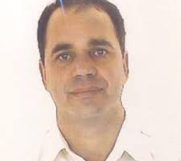
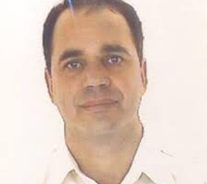
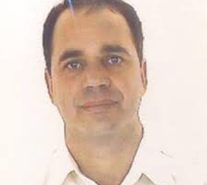

Olá! Essa página é dedicada aos professores que foram entrevistados pela Fatec. Saiba quem são.

Entrevistadores:
Prof. Gerson Carlos Favalli
Sardes Aparecida Batista – Bibliotecária
Dados principais:
• Primeiro Diretor da Fatec São José dos Campos (2006 – 2010)
• Atualmente leciona as seguintes disciplinas:
• Meio Ambiente e Saúde no Curso de Tecnologia em Projetos de
Estruturas Aeronáuticas (PEA),
• Tecnologia e Ambiente e Fundamentos de Redes de Computadores no
Curso de Tecnologia em Banco de Dados e
• Meio Ambiente, Segurança e Sustentabilidade no Curso de Tecnologia
em Manufatura Avançada
• Admissão no Centro Paula Souza: 1995
Nascido em 20 de junho de 1954 Fortaleza-Ce, casado em 1984 com Isabel Regina Cravo Rios, paulista, dentista. Pai de Marcela Cravo Rios (1987), engenheira agronômica, de Manuela Cravo Rios (1990), designer gráfico, e Mauro Cravo Rios (1991), engenheiro mecânico. Cursou o ensino fundamental e médio em Fortaleza, migrando para São Paulo em julho de 1971 com 17 anos, para realizar o curso de Formação de Especialistas da Aeronáutica na EEAer Guaratinguetá. Realizou o curso de Especialista de 1971 a 1973, graduando-se 3o Sargento e designado para trabalhar no DEPV (Diretoria de Eletrônica e Proteção ao Voo) no Rio de Janeiro. Em novembro do mesmo ano 1973, prestou concurso de admissão a AFA (Academia da Força Aérea), iniciando o curso de oficial aviador no início de 1974, em Pirassununga. Cursou a AFA de 1973 a 1977, quando prestou exame de admissão ao ITA, matriculando-se no curso de Engenharia de Infraestrutura Aeronáutica em 1977. Formou-se Engenheiro de Infraestrutura em 1981, sendo designado para trabalhar na Diretoria de Engenharia da Aeronáutica, no Rio de Janeiro. Em 1988, se candidatou ao programa de mestrado do ITA, sendo matriculado em 1989, concluindo o mestrado em 1991. Foi designado para trabalhar no IPV (Instituto de Proteção ao Voo), permanecendo até 1995, quando prestou concurso para FATEC Guaratinguetá. Foi diretor da Fatec Guaratinguetá de 1998 a 2002. Em 2006, foi convidado pelo superintendente do CPS para implantar a FATEC SJC, permanecendo como diretor até 2010. Após essa data foi coordenador dos cursos de Estruturas Leves e Automação Aeronáutica.
Durante os estudos no mestrado, de 1989 a 1991, desenvolveu o SIPAR, Simulador de PAR (Simulador de Precision Approuch Radar), que foi utilizado por vários no Brasil pela Força Aérea Brasileira e em vários países da América Latina como Panamá, República Dominicana, Colômbia, Cuba e outros. Paralelamente as atividades acadêmicas na Fatec, fundou a empresa Micro Assist Informática Ltda, sendo sócio proprietário até os dias atuais.
A Fatec foi criada em março de 2006 fruto de uma pareceria entre o CPS e a PMSJC. O acordo previa que o CPS entraria com a operação da escola (administração, professores etc.) e a prefeitura com o apoio e infraestrutura para funcionamento. Inicialmente, o prédio indicado para a instalação temporária da Fatec foi uma escola de ensino fundamental no bairro 31 de março. Em nossa primeira e única visita ao local, encontramos a Senhora Isa Maria Borrego Lorena, secretaria acadêmica contratada pelo Centro Paula Souza, instalada numa pequena sala, e percebemos que era inviável o funcionamento de uma Fatec naquela estrutura sem uma grande reforma. Como não se tinha tempo hábil para isso, pois já tinha ocorrido o vestibular do primeiro Curso de Logística e Transportes, foram oferecidas pela PMSJC as instalações recém adquiridas da fábrica da Solectron, onde seria instalado o Parque Tecnológico de São José dos Campos. Após uma visita as instalações da antiga fábrica da Solectron, além da grande sujeira encontrada percebemos que havia uma boa estrutura, principalmente infraestrutura de rede de computadores bastante sofisticada que com algumas modificações poderia se instalar de imediato laboratórios de informática para suportar o curso de Logística com ênfase em Transportes e outros que viriam na nova Fatec SJC. A primeira pessoa que encontrei ainda na escola de ensino fundamental foi a professora Isa, secretaria acadêmica. Em seguida, já instalados no núcleo do que seria o Parque Tecnológico de SJC, contratamos a Senhora Anna Hiromi Sogabe, responsável pela secretaria administrativa. De forma emergencial, foram contratados todos os professores do primeiro semestre do curso de Logística, tendo início o curso de forma bastante precária. Um ano após o início das atividades com um único curso (Logística), foi criado o curso de Tecnologia em Informática com ênfase em Banco de Dados e Redes de computadores (2007). Nos anos seguintes, em 2009, em parceria com a EMBRAER, foram criados os cursos de Tecnologia em Sistemas Aeronáuticos Manutenção e Manufatura Aeronáutica.
Um fato curioso foi a instalação do primeiro laboratório de informática da Fatec que como a criação da Fatec foi em março de 2006 e o Curso de Logística já estava com seu início atrasado, tivemos que instalar no fim de semana anterior a segunda-feira inicial, um laboratório com 20 computadores no sábado e domingo. Para isso, trouxe minha esposa e filhos para desembalar as máquinas, instalar os sistemas operacionais e configurar uma rede ponto a ponto para termos aulas na segunda-feira. Outro fato curioso é que como fomos a primeira instituição a se instalar na fábrica da Solectron, ocupamos a parte nobre (administrativa) da fábrica, onde havia instalações de ar-condicionado central e salas envidraçadas sem janelas. Como as instalações ficaram um bom período desativadas, os equipamentos de ar-condicionado central falhavam com certa frequência e o calor era insuportável nas salas de aula, o que nos obrigava a parar as atividades, suspendendo as aulas.
Uma pessoa muito importante no processo de viabilização da Fatec SJC foi o vice- prefeito de SJC da época, o senhor Riuji Cogima, que juntamente com o prefeito Eduardo Curi, viabilizaram nossa instalação provisória no prédio da Solectron. Também é importante lembrar que a Fatec foi a primeira instituição a popular o futuro Parque Tecnológico de SJC.
Uma pessoa muito importante no processo de viabilização da Fatec SJC foi o vice- prefeito de SJC da época, o senhor Riuji Cogima, que juntamente com o prefeito Eduardo Curi, viabilizaram nossa instalação provisória no prédio da Solectron. Também é importante lembrar que a Fatec foi a primeira instituição a popular o futuro Parque Tecnológico de SJC.